2.4 Normal Distribution
2.4.1 Objectives
By the end of this unit, students will be able to:
- Understand the notion and characteristics of continuous probability distributions.
- Use the normal distribution to model continuous random variables.
2.4.2 Overview
The Normal Distribution
Definition: If a random variable \(X\) is normally distributed with mean \(\mu\) and standard deviation \(\sigma\), we often write \(X\sim N\left(\mu, \sigma\right)\). Three different normal distributions appear below.
- In blue is a normal distribution with \(\mu = 0\) and \(\sigma = 5\)
- In red is a normal distribution with \(\mu = 0\) and \(\sigma = 0.5\)
- In black is a normal distribution with \(\mu = 0\) and \(\sigma = 1\) (the so-called Standard Normal Distribution)
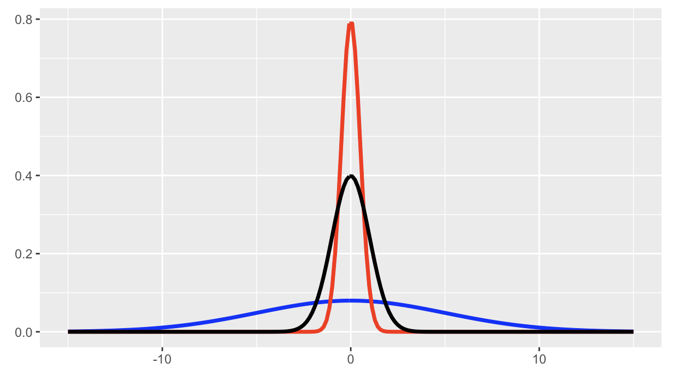
Properties of the Normal Distribution: We have the following properties associated with the normal distribution. Consider \(X\sim N\left(\mu, \sigma\right)\).
The area beneath the entire distribution is 1 (since this is equivalent to the probability that \(X\) takes on any of its possible values).
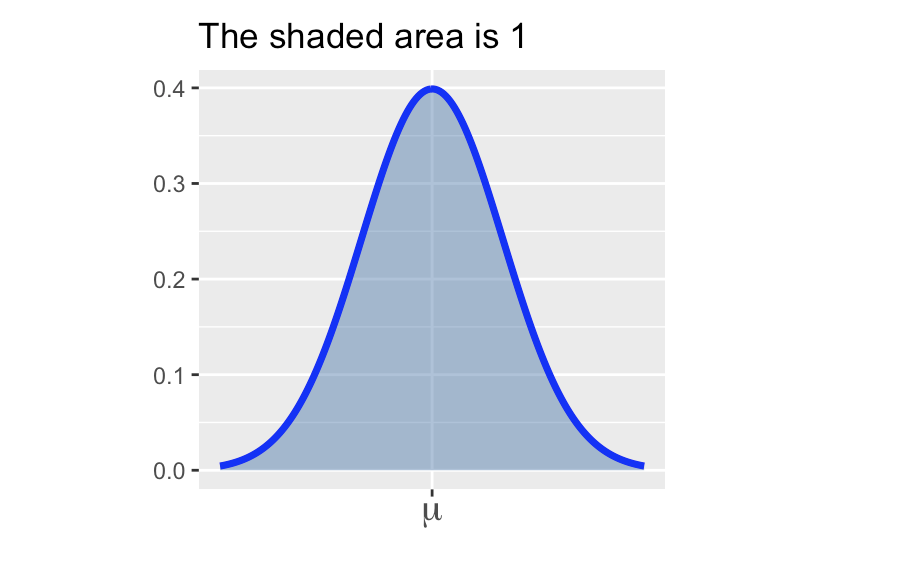
\(\displaystyle{\mathbb{P}\left[X\leq \mu\right] = \mathbb{P}\left[X\geq \mu\right] = 0.5}\) (the area underneath a full half of the distribution is 0.5)

The distribution is symmetric. In symbols, \(\mathbb{P}\left[X\leq \mu - k\right] = \mathbb{P}\left[X \geq \mu + k\right]\) for any \(k\).
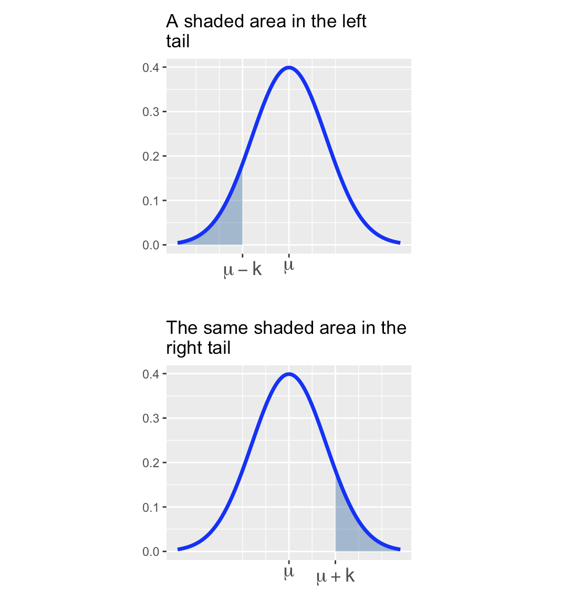
\(\displaystyle{\mathbb{P}\left[X = k\right] = 0}\) (the probability that \(X\) takes on any prescribed value exactly is \(0\))
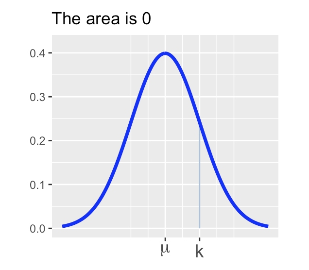 Sometimes it is useful to be able to estimate probabilities or to estimate the proportion of a population that falls into a range as long as the population is nearly normal. A convenient rule of thumb is the Empirical Rule.
The Empirical Rule: If \(X\sim N\left(\mu, \sigma\right)\), then
\(\mathbb{P}\left[\mu - \sigma \leq X\leq \mu + \sigma\right] \approx 0.68\) – that is, about 68% of observations lie within one standard deviation of the mean.
\(\mathbb{P}\left[\mu - 2\sigma \leq X\leq \mu + 2\sigma\right] \approx 0.95\) – that is, about 95% of observations lie within two standard deviations of the mean.
\(\mathbb{P}\left[\mu - 3\sigma \leq X\leq \mu + 3\sigma\right] \approx 0.997\) – that is, about 99.7% of observations lie within three standard deviations of the mean.
Standardization and \(z\)-scores
Scenario: Two students, Bob and Sally, are trying to compare how well they did on a college entrance exam. The difficulty comes in that Bob took the SAT which is known to follow an approximate normal distribution with a mean score of 1068 and a standard deviation of 210 while Sally took the ACT which also follows an approximately normal distribution but with a mean score of 20.8 and a standard deviation of 5.8. If Bob scored a 1400 on the SAT and Sally scored a 31 on the ACT, who scored relatively higher?
How do we answer this question? We’ll see two methods.
Method 1: We can standardize the test scores so that they have comparable units.
- Definition: If an observation \(x\) comes from a nearly normal population with mean \(\mu\) and standard deviation \(\sigma\) then we compute \(z\)-score associated with \(x\) as follows:
\[\displaystyle{z = \frac{x - \mu}{\sigma}}\]
- An observation’s \(z\)-score is simply the number of standard deviations it falls above or below the mean.
A recap on \(z\)-scores: We can use \(z\)-scores as a common unit for comparing observations from completely different populations (such as SAT scores and ACT scores). Here’s a recap of the most important information so far:
If an observation \(x\) comes from a nearly normal population with mean \(\mu\) and standard deviation \(\sigma\), we can compute it’s \(z\)-score using the formula: \(\displaystyle{z = \frac{x - \mu}{\sigma}}\).
A \(z\)-score measures the number of standard deviations which an observation falls above or below the mean.
- A positive \(z\)-score means that an observation was above the mean.
- A negative \(z\)-score means that an observation was below the mean.
- The larger a \(z\)-score is in absolute value, the further the corresponding observation falls from the mean. That is, the larger the magnitude of a \(z\)-score, the further into the tail of the distribution the corresponding observation falls.
Method 2: We can compute the percentile corresponding to Bob’s SAT score and the percentile corresponding to Sally’s ACT score.
- Definition: Given an observation \(x\) from a population – the percentile corresponding to \(x\) is the percentage (proportion \(\times\) 100) of the population which falls below \(x\).
Bob’s percentile corresponds to the shaded area in the distribution below.
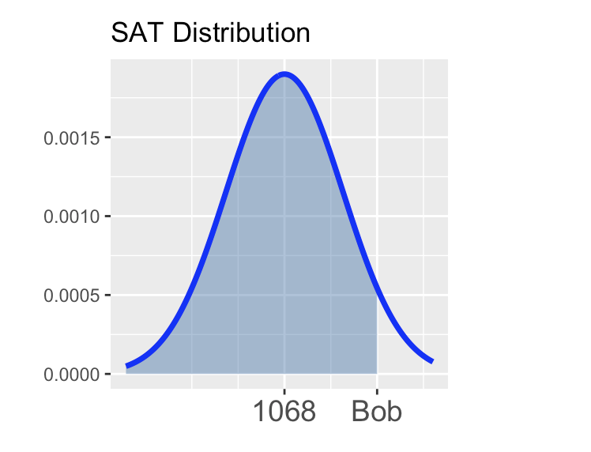
Sally’s percentile corresponds to the shaded area in the distribution below.

There are many ways to compute percentiles. Before the widespread availability of statistical software, people converted observed values to \(z\)-scores and then looked up the percentile in a table. Luckily R provides nice functionality for computing percentiles.
Computing Percentiles in R: If \(X\sim N\left(\mu, \sigma\right)\), then \[\mathbb{P}\left[X\leq q\right] \approx \tt{pnorm(q, mean = \mu, sd = \sigma)}\]
Computing probability from a normal distribution
Through this section you’ll be getting practice finding probabilities by using R’s pnorm() function to compute areas. Remember that the pnorm() function takes three arguments – the first is a \(\tt{boundary}\) value, the second is the \(\tt{mean}\) of the distribution, and the third is the \(\tt{standard~deviation}\). The value returned by pnorm() is the area to the left of the provided boundary value in the distribution with the mean and standard deviation you provided.
For these first few questions I’ll draw pictures for you, but you should be prepared to draw your own shortly.
Question 1: Remember that \(Z\sim N\left(\mu = 0, \sigma = 1\right)\).
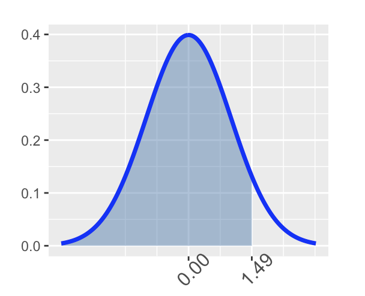
Question 2: Find \(\mathbb{P}\left[Z > \right.\) \(\left.\right]\).
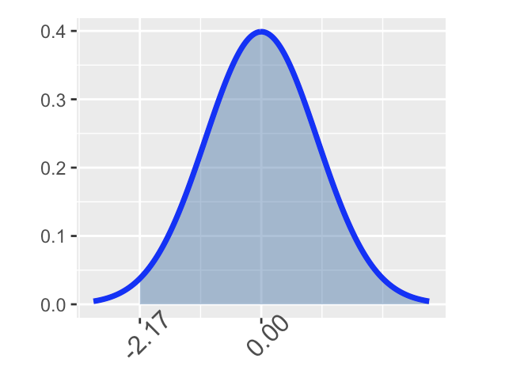
Question 3: Find \(\mathbb{P}\left[\right.\) \(< Z <\) \(\left.\right]\).
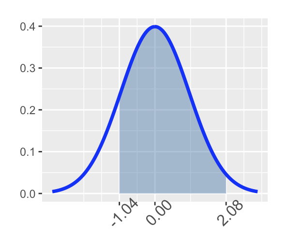
Through the last three problems you only worked with the standard normal distribution – that’s the \(Z\)-distribution, which is \(N\left(\mu = 0, \sigma = 1\right)\). We can find probabilities from arbitrary normal distributions (normal distributions with any mean and any standard deviation) using R’s ‘pnorm()’ functionality – just supply the appropriate ‘mean’ and ‘sd’ arguments to ‘pnorm()’ instead of the 0 and 1 that we passed earlier.
Finding percentile cutoffs on a normal distribution
Recall from earlier that the \(p^{th}\) percentile of a random variable \(X\) is the value \(x^*\) such that \(\mathbb{P}\left[X < x^*\right] = p\).
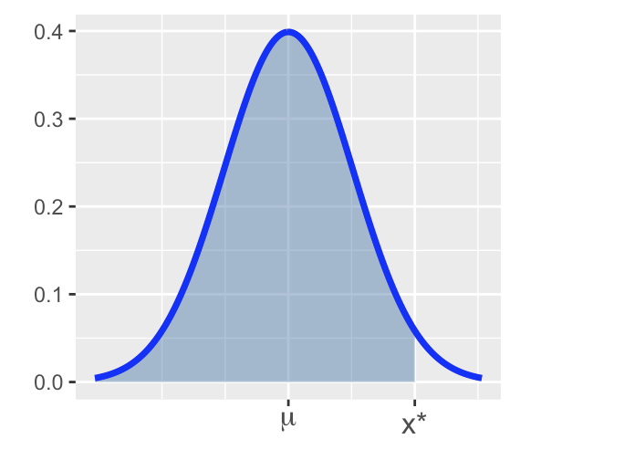
If \(X\sim N\left(\mu, \sigma\right)\), then to find the cutoff \(x^*\) for which \(\mathbb{P}\left[X < x^*\right] = p\), we can use R’s ‘qnorm()’ function. Similar to pnorm(), this function takes three arguments. The first is the \(\tt{area~to~the~\underline{LEFT}}\) of the desired cutoff, the second is the \(\tt{mean}\) of the distribution, and the third is the \(\tt{standard~deviation}\) of the distribution.
Recall from earlier that SAT scores followed \(N\left(\mu = 1068, \sigma = 210\right)\) and ACT scores followed \(N\left(\mu = 20.8, \sigma = 5.8\right)\). The code block below is set up to find the minimum required SAT score to fall in the 95th percentile (to do better than 95% of other test-takers). Execute the code and note the required score. Adapt the code to find the minimum ACT score required to fall into the top 10% of all ACT test takers. Does your answer seem right? How can you judge?
Using R to compute cumulative probability for \(X \sim N(\mu, \sigma)\)
- For \(P(X < b) = P(X \leq b)\):
pnorm(b, \mu, \sigma) - For \(P(X > a) = P(X \geq a)\):
pnorm(a, \mu, \sigma, lower.tail = FALSE)or1 - pnorm(a, \mu, \sigma) - For \(P(a < X < b)\):
pnorm(b, \mu, \sigma) - pnorm(a, \mu, \sigma)or1 - (pnorm(a, \mu, \sigma) + pnorm(b, \mu, \sigma, lower.tail = FALSE)) - For \(Z \sim N(0, 1)\): the mean and SD can be omitted in 1)-3):
- \(P(Z < b)\):
pnorm(b)
- \(P(Z < b)\):
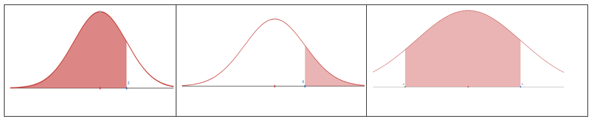
To Compute Inverse Cumulative Probability (Finding x for Given Cumulative Probability)
- Find \(x\) for \(P(X < x) = p\):
qnorm(p, \mu, \sigma) - Find \(x\) for \(P(X > x) = p\):
qnorm(1 - p, \mu, \sigma)orqnorm(p, \mu, \sigma, lower.tail = FALSE)
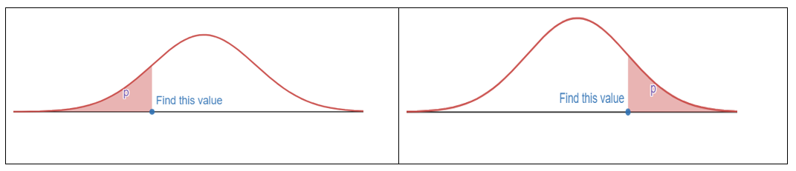
Z-score
- If \(X \sim N(\mu, \sigma)\), the z-score of x is computed by \(z = \frac{x - \mu}{\sigma}\).
- The z-score measures how many standard deviations of x from the mean.
- \(Z = \frac{X - \mu}{\sigma} \sim N(0, 1)\)
- \(X = \mu + Z \cdot \sigma\)
- \(x = \mu\) if \(z = 0\); \(x > \mu\) if \(z > 0\); \(x < \mu\) if \(z < 0\)
Empirical Rule (68-95-99.7 Rule)
For a nearly normally distributed data, the empirical rule predicts that:
- 68% of observations fall within the first standard deviation (\(\mu\) ± \(\sigma\)).
- 95% within the first two standard deviations (\(\mu\) ± 2\(\sigma\)).
- 99.7% within the first three standard deviations (\(\mu\) ± 3\(\sigma\)) of the mean.

2.4.4 Exercises
Exercise 1 For \(Z \sim N(0, 1)\) (the standard normal distribution, the mean = 0, the standard deviation = 1), use R to find the probability and sketch the region that represents the probability.
(a). \(P(Z < -1.5)\) (b). \(P(Z > 1.75)\) (c). \(P(-1.5 < Z < 1.75)\) (d). \(P(|Z| < 2.5)\) (e). \(P(Z > 1)\)
Exercise 2 For \(X \sim N(-3, 2)\) (the normal distribution, the mean = -3, the standard deviation = 2), use R to find the probability and sketch the region that represents the probability.
- \(P(X < -3.25)\)
- \(P(X > 1.75)\)
- \(P(-3.25 < X < -1.25)\)
Exercise 3 For \(X \sim N(-3, 2)\), compute the z-score of the given x:
- \(x = -3.25\)
- \(x = -3\)
- \(x = -1.25\)
Exercise 4
(a). State the Empirical Rule.
(b). Use R to verify the Empirical Rule: find \(P(|Z| < 1)\), \(P(|Z| < 2)\), \(P(|Z| < 3)\).
Exercise 5
The scores on a college entrance exam follow a normal distribution with a mean of 50 and standard deviation of 10. Find the probability that a student will score:
(a). Over 65
(b). Less than 25
(c). Between 33 and 68
Exercise 6
The scores on a college entrance exam follow a normal distribution with a mean of 50 and standard deviation of 10.
(a). What is the cut off score of the lowest 20%? (Round to 1 decimal)
(b). What is the cut off score of the highest 10%? (Round to 1 decimal)
Exercise 7
The hours of sleep of college students fits a normal distribution with mean of 7.2 hours and standard deviation of 1.3 hours. Find the (standardized) z-score corresponding to 6.5 hours.
Exercise 8
John scored a 92 on a test with a mean of 88 and a standard deviation of 2.7. Jessica scored an 86 on a test with a mean of 82 and a standard deviation of 1.8. Find the Z-scores for John’s and Jessica’s test scores and use them to determine who did better on their test relativ*e to their class.
Exercise 9
The score data of the verbal portion of the Graduate Record Examination (GRE) is approximately normally distributed with a mean of 462 points and a standard deviation of 119 points. Fill in the following blanks: approximately
(a) 68% of students who took the verbal portion of the GRE scored between _______ and ________
(b) 95% of students who took the verbal portion of the GRE scored between ______ and ________
(c) 99.7% of students who took the verbal portion of the GRE scored between ______ and ________